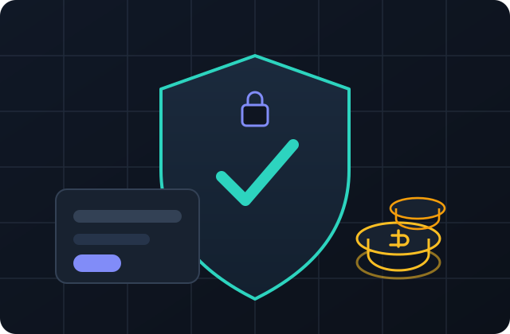
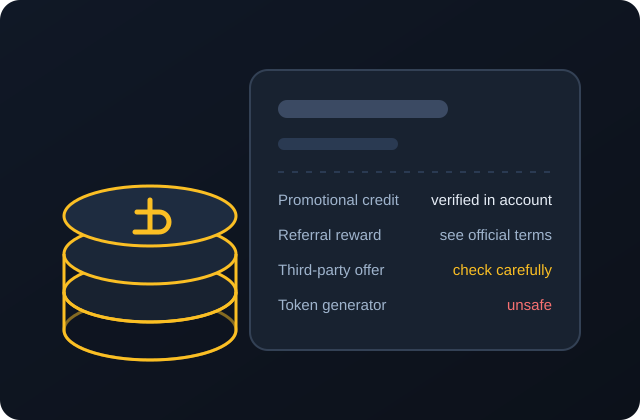

StripChat Free Tokens: Legitimate Methods, Safety Tips & 2026 Guide
If you arrived here looking for StripChat free tokens, the honest headline is simple: tokens are a paid platform currency, and there is no trustworthy tool that creates them on demand. Promotional credits do exist, but they only ever arrive through official platform channels, clearly documented campaigns, or third-party offers whose terms you can actually verify. This guide explains how those offers work, where the risks are, and how to tell a real promotion from a scam.
- No generators, no “hacks”, and no promises of unlimited credits
- A neutral explanation of promotions, drawings, and referral programs
- Plain-English safety steps for passwords, downloads, and lookalike pages

ℹ Independent educational guide
This website is an independent informational resource. It is not affiliated with, endorsed by, or operated by StripChat, and “StripChat” and related names are trademarks of their respective owners. Nothing here is a promise, guarantee, or offer of tokens. We may link to external promotional sites, which are clearly marked as sponsored external resources.
The short video below is an embedded YouTube video from an independent publisher. It walks through the same questions this guide covers, including “free token” claims, the offer sometimes described as a 50 TK draw, and why hack and generator promises deserve scrutiny. Watch it here, or read the full guide underneath.
- Why “unlimited token” and “hack” promises are not proof of anything
- What to check before trusting a 50 free-token drawing or hourly-reward claim
- Which details you should never hand to a third-party website
Embedded third-party YouTube video. It does not autoplay; press play to load it. YouTube’s terms and privacy policy apply once you interact with the player. This site does not own or produce the video.
What StripChat tokens actually are
Before discussing free tokens, it helps to understand what a token is. On adult live-stream platforms, tokens (sometimes shown as TK) are a prepaid internal balance that viewers spend on platform interactions — for example tipping performers, sending private-show requests, or unlocking paid features. The platform sells token packages, and that balance is what performers ultimately earn from.
Three consequences follow from that design:
- Tokens have real monetary value. A token balance is money moving through the platform’s billing system, which is why accounting around it is tightly controlled.
- Balances live in platform accounts. Credits are not files, codes, or strings that a random website can “generate.” A balance can only change through the platform’s own systems or an integration the platform authorizes.
- Promotions are marketing, not loopholes. When a platform or an authorized partner gives credits away, it does so deliberately — as a welcome incentive, event prize, loyalty reward, or tracked partner offer — and it leaves a paper trail in the terms.

Keeping that model in mind makes the rest of this guide much easier: if someone claims they can type your username into a web form and add tokens to any account, bypassing billing entirely, they are claiming to have broken the platform’s core payment systems. Such claims should be treated as a warning sign, not an opportunity.
Can you legitimately get tokens for free?
Sometimes — but never through a “generator,” and never on the scale that scam advertising implies. Legitimate no-cost credits are limited promotional events with eligibility rules. Typical patterns include:
- Welcome or registration promotions offered directly inside a new account or on the platform’s official billing pages;
- Contests, drawings, and giveaways run by the platform or by performers, where winners and rewards are governed by published rules;
- Referral or loyalty rewards, but only where the program is documented in official help or account pages;
- Partner promotions that route users through tracked campaigns and credit accounts through the platform’s authorized mechanisms.
The common thread is verification: a real promotion will always be visible while you are logged into your official account, will have readable terms, and will never need your password, two-factor codes, or an app download. If you want the complete breakdown, our page on legitimate StripChat token methods walks through each pattern and how to confirm it.
✓ Rule of thumb
If an offer is genuine, you can find it confirmed inside your account on the official platform or in an official announcement. Anything that exists only on an unrelated website, in a downloaded tool, or in a direct message should be treated as unverified until proven otherwise.
Where legitimate promotional tokens come from
Search phrases such as StripChat tokens free or StripChat free TK usually lead to a confusing mix of official pages, fan-run contests, creator videos, and affiliate sites. Understanding who can actually credit an account removes most of that confusion.
1. The platform itself
The most reliable source is the platform’s own billing, promotions, or announcements area when you are logged in. Seasonal campaigns, first-purchase bonuses, and test promotions appear there first, and the credit is applied automatically or through a clearly described claim flow. Always compare anything you see elsewhere against what your official account actually shows.
2. Verified performer or community giveaways
Performers occasionally run their own token giveaways or prize drawings during streams. These are legitimate when they happen inside the platform, follow the platform’s contest rules, and credit winners through normal tipping or platform-managed prizes. A real giveaway never asks you to send your password, scan an unknown QR code, or verify yourself on a third-party page.
3. Officially documented referral programs
Referral rewards exist only when the platform publishes a program — a referral link in your account, official terms, and a stated reward. If a stranger sends you a “referral code” by private message with promises of hourly free credits, check whether the program actually exists in official documentation before participating.
4. Authorized partner campaigns
Adult platforms sometimes work with promotional partners. A genuine partner campaign redirects to official pages, uses tracked links the platform recognizes, and applies rewards through official billing. A site that claims partnership but keeps you on its own pages, asks for login details, or wants you to install software is not behaving like an authorized partner.
Third-party offers and the “50 TK draw”
You may see promotions — including in videos and social posts — describing a 50 TK draw, “50 free tokens,” or hourly giveaways, sometimes pointing to external promotional websites. We describe these as possible promotional drawings or third-party offers, not as confirmed rewards.
If you choose to examine such an offer — for example the external site referenced in the embedded video — treat every claim as something you must verify on the destination itself:
- Availability: Is the drawing actually active right now, or is the page recycled from an old campaign?
- Eligibility: Does it apply to new accounts only, specific countries, adult users, or existing customers?
- Terms and odds: Are rules, prize descriptions, draw dates, and any limits published in full?
- Redemption path: If you win, how exactly does the credit reach your official account, and who operates that flow?
- Data requests: Does the page demand passwords, verification codes, payment information, or unexpected fees? (It should not.)
Sponsored external links notice: Buttons labeled “Check the 50 TK Draw Offer” lead to independent third-party websites (such as striptks.live) using rel="nofollow sponsored noopener noreferrer". We do not verify those sites as official, safe, or affiliated with StripChat. External offers may have separate terms, eligibility requirements, and availability. We do not guarantee tokens, prizes, or results. Review each destination carefully before taking action. See our affiliate disclosure.
Calling a third-party site a “legal source” would require verifying its legal status, which we cannot do from the outside. We therefore use neutral terms — external resources and independent websites — and leave the final judgment to you after reading the terms and checking official sources.
Hacks, mods, and generators: why to avoid them
Searches for StripChat hack, StripChat mods, StripChat mod APK, or StripChat mod tokens free return pages that pretend to exploit the platform. These are treated here strictly as search-intent topics and safety warnings, not as instructions.
Why a “token generator” cannot do what it claims
A token balance is a server-side ledger entry tied to billing. A public web form cannot write to that ledger without being an authenticated, authorized part of the platform. If such a flaw existed, publishing a free tool for it would be a fast-moving financial vulnerability — not a website covered in “human verification” surveys. The generator’s purpose is not to add tokens; it is to convert your hope into clicks, downloads, survey revenue, or stolen credentials.
What “mod APK” pages usually deliver
An “unlimited tokens” Android package installed outside official app stores bypasses the platform’s normal security review. Common outcomes are credential-stealing screens, overlay attacks that record your payment details, unwanted subscriptions, adware, or simply a dead app that shows a fake progress bar. Modified clients also violate terms of service and can lead to account termination.
The real cost of “free”
When a free token tool succeeds (for its operator), the currency is typically one of these: your account, your email credentials, premium-rate subscriptions on your phone bill, malware on your device, or survey/ad revenue you generate for the scammer. None of those outcomes is cheaper than buying tokens legitimately. Our detailed page explains how token-related scams work, from phishing pages to fake extensions.
Safety checklist before you click any offer
- Confirm you are on the real domain. Check the address bar and HTTPS padlock yourself; do not trust links in messages or ads. Lookalike domains (extra letters, swapped characters, unusual endings) are a classic phishing trick.
- Cross-check inside your account. Open the official platform directly, log in, and look for the promotion in billing, announcements, or messages. If it is not reflected there, treat the external claim as unverified.
- Read the terms before entering anything. Find eligibility, prize value, draw dates, odds (where required), data handling, and cancellation rules. Missing terms are a red flag, not a detail.
- Never share passwords or 2FA codes. Platform staff and legitimate promotions never ask for your password, login codes, backup codes, or screen-shared verification. Enter credentials only on the official domain.
- Decline forced downloads. No token drawing requires installing an APK, a “verification app,” or a browser extension from an unknown developer.
- Pay no release fee for a free prize. Scams commonly ask for a small “processing” or “verification” payment to unlock supposedly free tokens. Legitimate prizes do not work that way.
- Use a unique password and 2FA. A dedicated, unique password plus authenticator-based two-factor authentication contains the damage if you ever slip up.
What to avoid
Generators & “adder” tools
Web tools that promise free credits after entering a username — usually followed by surveys or downloads.
Mod APKs and “unlocked” apps
Sideloaded Android packages or cracked clients claiming modified balances, often laced with malware.
Lookalike login pages
Phishing pages that mimic the platform to harvest passwords, codes, and card details.
Fake extensions & surveys
Browser add-ons and endless “human verification” loops built to steal data or earn click revenue.
Summary
StripChat tokens are a paid currency, and no public generator can mint them. Legitimate free credits are limited, official or officially partnered promotions with real, readable terms. Third-party drawings such as the advertised 50 TK draw are possible promotions worth checking — never guarantees. Meanwhile, “hacks,” mod APKs, and generators are safety hazards that commonly lead to stolen accounts or devices. Verify every offer inside your official account, protect your password and two-factor codes, and decline any tool that requires a download, fee, or login on an external page.
Continue with legitimate methods that can actually work, learn how to identify fake token generators and phishing, or watch the StripChat token safety video.
Frequently asked questions
Is there any way to get free StripChat tokens?
There can be limited promotional credits through official platform campaigns, clearly documented giveaways, or authorized partner offers. There is no reliable way to generate free tokens on demand, and any tool that claims to do so is unsafe. Always confirm a promotion inside your official account before participating.
What is the “50 TK draw” advertised in videos?
It appears to describe a possible promotional drawing or third-party offer of around 50 tokens. We cannot confirm its availability, eligibility, odds, or legitimacy. If you visit a destination that promotes it, read the full terms, verify how prizes reach official accounts, and never provide passwords, codes, payment details, or fees. Availability and rules must be checked on the destination website.
Do token generators or “adders” ever work?
Not as a legitimate path to credits. Token balances are controlled server-side by the platform’s billing systems. Public “generator” pages cannot write to those systems; they typically funnel users into surveys, forced downloads, phishing forms, or malware. They can also result in account bans.
Is a StripChat mod APK safe to install?
No. A modified Android app installed outside official channels bypasses security review, may request dangerous permissions, and can steal login and payment information or load adware. Using modified clients also typically violates the platform’s terms and can get the account closed. Treat terms such as StripChat mod APK or StripChat mod tokens free as warnings, not recommendations.
How can I tell if a giveaway is legitimate?
It runs on or through the official platform, publishes complete rules and eligibility, never asks for your password or two-factor codes, never charges a fee to release a prize, and is visible in your official account. Giveaways that live only on third-party pages, demand downloads, or pressure you with countdowns and scarcity should be avoided.
Can I be banned for using hacks or generators?
Yes. Attempting to use exploits, modified clients, or tools that claim to alter balances typically violates the platform’s terms of service and can lead to suspension or permanent closure, along with the loss of any legitimate balance. The greater risk, however, is credential theft and malware.
Are the external offer links on this site official?
No. Any sponsored external links (such as the “Check the 50 TK Draw Offer” button) lead to independent third-party websites and are marked with rel=”nofollow sponsored”. They are not claimed to be official, verified, safe, or affiliated with StripChat. Our affiliate disclosure explains how these links work.